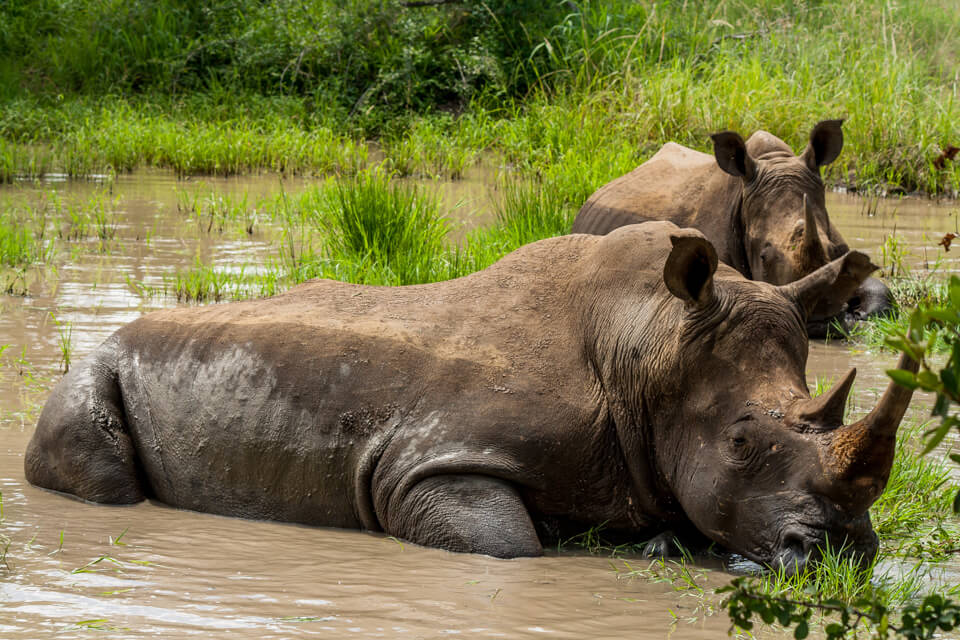

When choosing a safari holiday, the term 'the Big 5' will often crop up and refers to some of the most popular wildlife in Africa, the lion, African elephant, Cape buffalo, leopard, and rhinoceros. The phrase itself was coined by African hunters and refers to the five most difficult and dangerous animals to hunt on foot. Of course, Big Five safaris are in no way associated with the unethical act of trophy/canned hunting (banned completely in Kenya and increasingly so in other areas of Africa) but the term is still used by most guides and tourists as an easy term to encapsulate the must see animals. The Big Five can be found together in South Africa, Kenya, Tanzania, Namibia, Zambia and Botswana, though obviously not in all parks so do make sure you research thoroughly to avoid any disappointment. African wildlife species are each incredible in their own way. Our advice would be- dont run past an elegant giraffe or beautiful cheetah to seek out an elephant just to have a check mark on your Big Five list.
